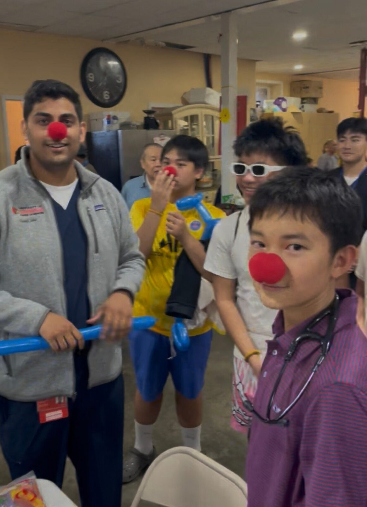
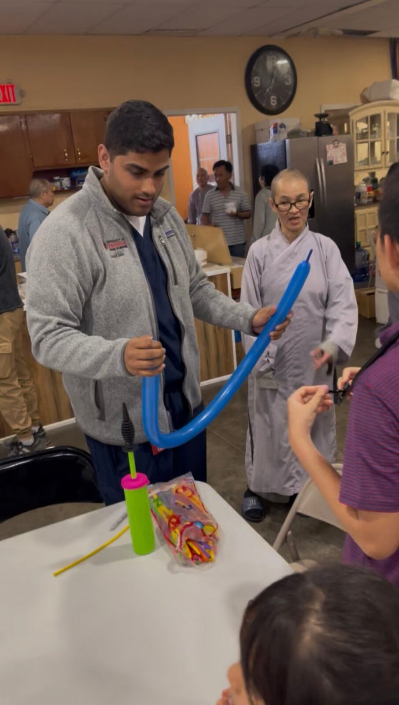
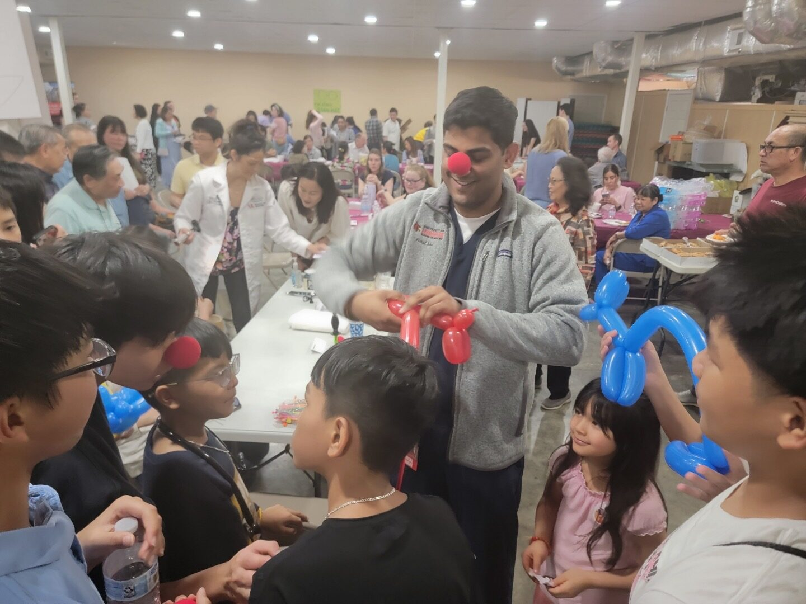
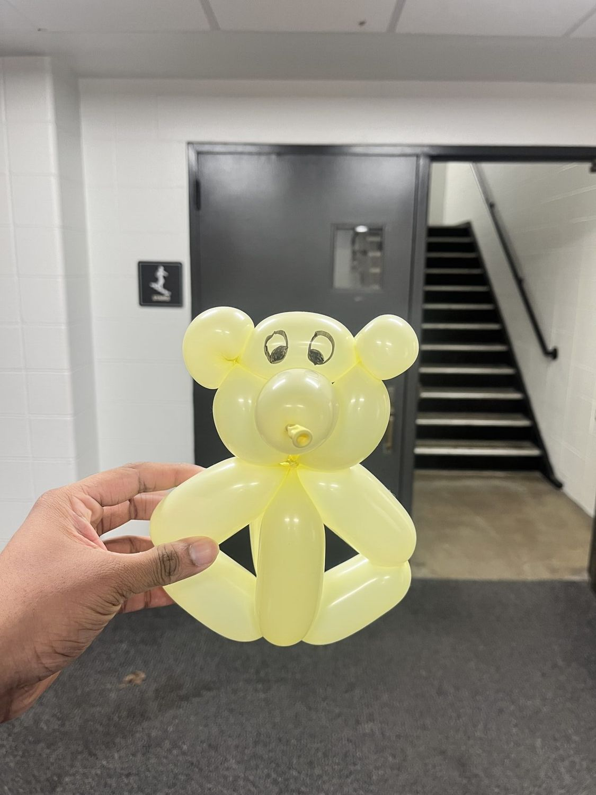
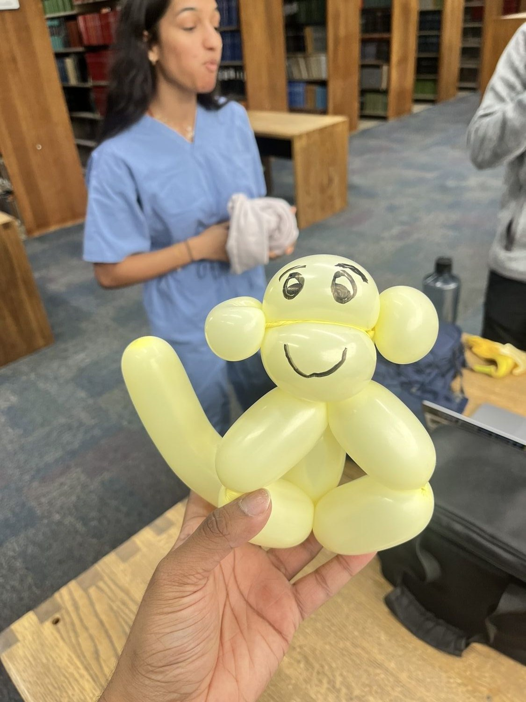
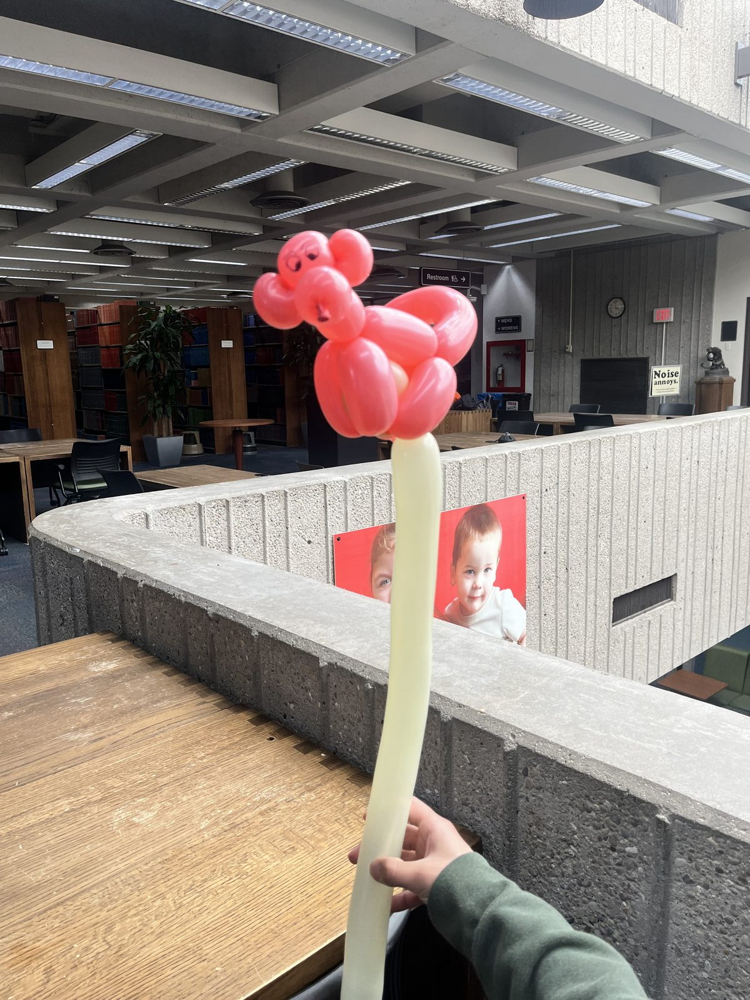
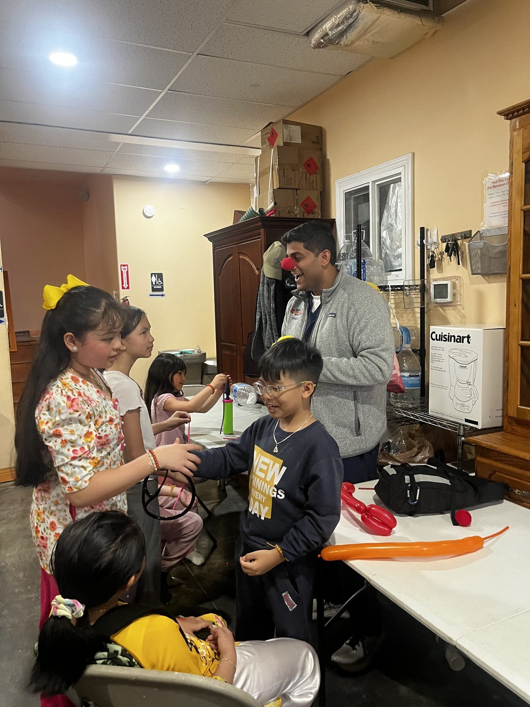

Balloon Animals
Volunteer · APAMSA Louisville Health Fair · 2025
Balloon Animals at the APAMSA Health Fair
As a second-year medical student, I volunteered at a community health fair organized by APAMSA Louisville (Asian Pacific American Medical Student Association) at a local Buddhist temple. The event brought free health screenings directly to Louisville's Asian community — including blood pressure checks, diabetes testing, eye exams, and more — serving families who often face significant barriers to accessing preventive care.
While the adults and elderly attendees received their screenings, the kids needed something to do. So I showed up with a bag of balloons, air pump, and a red clown nose. What started as a way to keep the children entertained quickly became one of the most rewarding afternoons I've had in medicine so far. Every balloon sword, bear, monkey, or giraffe I twisted meant a parent or grandparent could focus on getting the health screening they needed — without worrying about a bored, restless kid tugging at their sleeve.
The Gallery






Drag to spin · click a photo to enlarge
Why This Matters
Community health fairs are one of the few touchpoints that bring preventive care directly to people who might not otherwise access it. Hypertension, diabetes, and vision problems are all conditions that, caught early, can dramatically change a patient's trajectory. My job that day wasn't diagnosing or treating — it was making sure the adults in the room felt free to take care of themselves.
Medicine is so much more than what happens in an exam room. Sometimes it's a red clown nose and a bag of balloons.